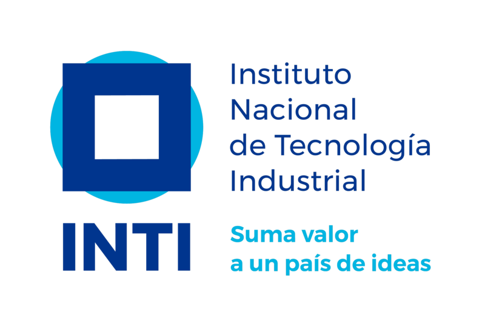
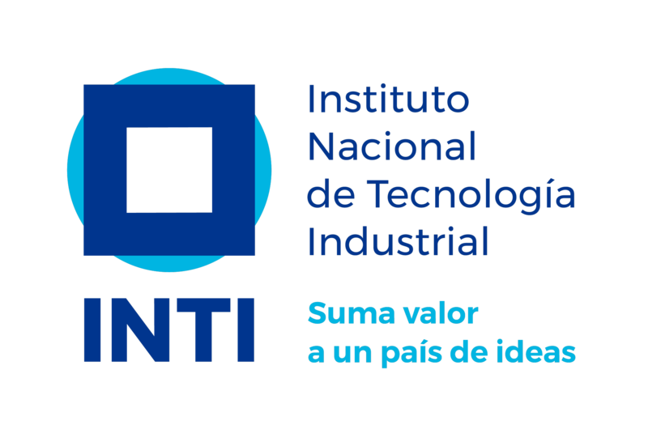

Curso gratuito, tambien conocido como "primera etapa" del curso "Argentina Programa", creado por el Gobierno nacional y el INTI, certificado por el Ministerio de Produccion de la Nación y CESSI. Este es un curso introductorio en el que aprendí los fundamentos básicos de la programación, el mismo, estaba dividido en tres módulos:
La aprobación del mismo, nos habilita para poder cursar la segunda etapa, conocida como #YoProgramo.
Curso gratuito, también conocido como "segunda etapa" del curso "Argentina programa", creado por el Gobierno nacional y el INTI, certificado por el Ministerio de Produccion de la Nación y CESSI. En este curso, adquirí las habilidades y herramientas necesarias para convertirme en un programador web full-stack junior. El mismo consta de 9 módulos:
Cabe destacar que este mismo portafolio, es el trabajo integrador del curso #YoProgramo, en el que traté de volcar todas las habilidades adquiridas en el mismo, con la ayuda de mis profesores y compañeros.
Para más informacion, click en el logo de Argentina Programa.